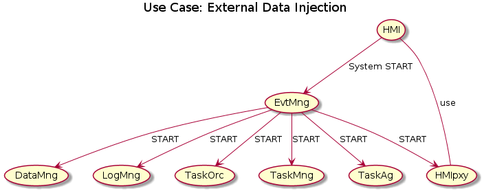
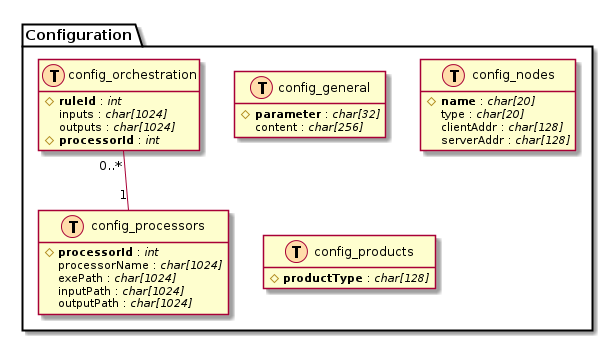
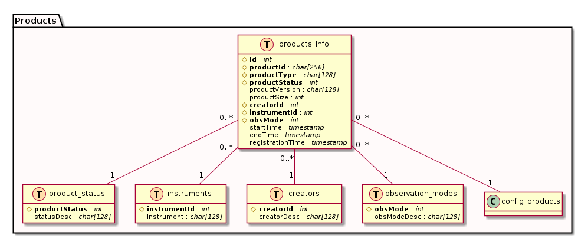
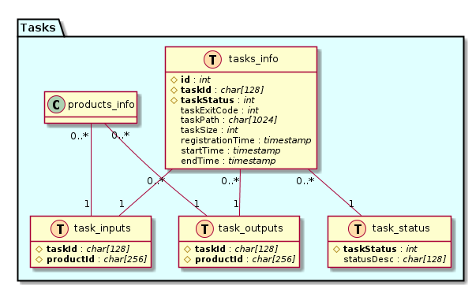
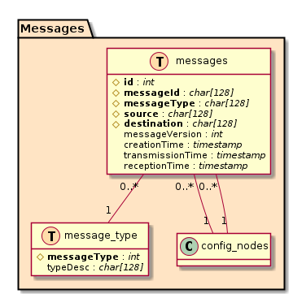
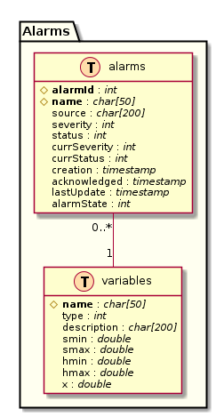
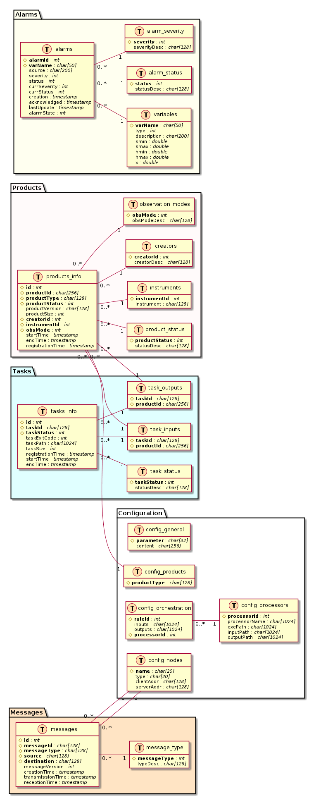

QPF - QLA Processing Framework Config. file
Table of Contents
#http://easdps01.esac.esa.int:8000/DbView #https://euclidsoc.esac.esa.int:8300/{status,jobs,files} #http://archives.esac.esa.int/esasky-beta
1 QPF - QLA Processing Framework
1.1 Introduction
1.1.1 Euclid Operations Main Entities
The main elements interfacing each other at the mission operation phase are the Science Operations Centre (SOC) and the Mission Operations Centre (MOC). In addition, there are two Instrument Operations Teams (IOTs), responsible for the definition of the instrument operational procedures as well as to ensure the operability of the different instruments along the mission.
- Mission Operations Centre
The Euclid Mission Operations Centre at ESOC is the responsible for the consolidation and uplink of all the telecommanding to Euclid, including those related to instrument operations. It is also the responsible to obtain the telemetry generated on board, and make it available to the SOC and, (through MOC infrastructures), to the IOTs-SDCs during the Commissioning and PV phases, and for contingencies.
Being the responsible to uplink telecommands, it is the final responsible to guarantee the instrument safety and health, following the given criteria and procedures provided by IOTs.
The MOC shall also act as configuration control holder of the instruments operational DBs (MIB), being the entity in charge of its formal dissemination to SOC and operational deployment.
- Science Operations Centre
The Science Operations Centre at ESAC is the responsible of the Survey execution. It generates the required commanding requests to ensure its fulfilment as well as the routine calibration plan. It also acts as formal interface from the IOT’s to the MOC during the routine mission, consolidating instrument operational requests against the on-going survey, and if required and not covered by a coordinating IOT entity, across instrument consolidation. It is part of the Instrument Monitoring to provide a quick look assessment on the instrument performance and survey execution.
The SOC is the entity responsible to gather the data provided by the MOC and make it available to the rest of the Science Ground Segment in appropriate format, generating the Level 1. The content and format of Level 1 is not part of this document, but it is foreseen that will comprise the scientific, house-keeping and ancillary information received from MOC.
- Instrument Operation Teams
The Instrument Operations Teams are the entities responsible to define the Instrument Operations, mainly the instrument operational procedures, the instrument DBs and the criteria for instrument safety and health, as well as for instrument monitoring. They must ensure operability along the mission, and also ensure optimal operations strategy through an overall instrument monitoring, capability to update or modify the instrument SW, DB or procedures, and generate updates to the calibration and characterisation. They should inherit and build on expertise from the Instrument Development Teams, in order to understand and react to instrument anomalies and also to assess instrument data.
The two IOT’s will have a single IOT coordinator that will act as single point of contact regarding overall system architecture, issues of mutual concern and also as main responsible of ensuring towards SOC (and therefore MOC) the coordination of combined instrument activities.
- Science Data Centres
The Science Data Centres are entrusted to run pipelines to process the Science Telemetry of the instruments. Part of this process can encompass the Instrument Monitoring assessment and flagging, to be used by IOTs in identification of trends or misbehaviours, and also to process specific calibration observations that may end up in updates to On Board or Ground items. However, it could also be the case that the IOT’s themselves will be OU-SDC’s related to this dedicated pipelines. Both IOT’s and SDC’s will feed int0 EAS relevant information to allow the assessment of the survey execution by SOC. Even if the key personnel is the same running IOT and SDC tasks, a clear functional split across the two domains may be desirable.
1.1.2 Euclid SOC Architecture Design
- Euclid SOC responsibilities
The SOC is the only interface to the MOC during routine operations, and is in charge of the following satellite and payload operations specific tasks:
- planning the surveys, based on observing guidelines by the EST,
- scheduling the spacecraft slews and the exposures
- handling instrument operations/maintenance requests from the EMC,
- monitoring the survey performance,
- first-level quality control and monitoring of the instrument health,
- rescheduling as required in case of anomalies,
- requesting MOC action via predefined procedures and sequences of telecommands
The SOC receives the housekeeping, pointing, and science data from MOC and archives them. It derives Level 1 products for ingestion into the EAS. They are also used for quick-look analysis and first level quality control of the data.
The SOC is responsible for operating the EAS and populating it with the data and mission products produced by the SDCs. It manages the access rights to the EAS.
The SOC takes the lead in the overall design and engineering of the SGS, and, under scientific supervision of the EST, organizes and manages the end-to-end tests, to validate the SGS data processing pipelines, interfaces, and operational processes.
The SOC is responsible for the development, procurement, integration, validation and maintenance of all the software and hardware systems which it operates.
- Euclid SOC Subsystems
- QLA
- Quick Look Analysis
- HMS
- Health Monitoring System
- ESS
- Euclid Survey System
- SIS
- SOC Interface System
- SCS
- SOC Command System
- SAS
- SOC Ancillary Systems
- L1P
- Level 1 Processing
- EAS@S
- Euclid Archive System at SOC
- SOC Storage
- Storage at SOC
1.1.3 QLA Subsystem
- QLA Capabilities
- Introduction
The aim of this page is to present a first draft of the quick-look analysis tool requirements run at the SOC.
Part of the Euclid SOC duties during mission operation is to quickly assess the quality of science data and the associated telemetry. The SOC is responsible to implement in a Quick Look Analysis (QLA) tool capable of:
- Automatically check S/C data, produce and ingest reports in the Euclid Archive System within 48 hours from data retrieval to confirm that the data are correct and eventually quickly react to issues. The IOT (instrument operation team) and EC (Euclid consortium) will investigate the data in further details, but in can take some weeks as the data is foreseen to be reduced once a larger sky patch has been observed
- Facilitate data inspection by the user (mainly instrument scientists) in case further data inspection is needed, e.g. being capable of accessing detectors data, showing it and/or exporting it to external programs
- Short Description
The standard, wide-survey observing sequence for Euclid is defined as:
- Each observing field is observed 4 times, i.e. 4 dither positions. The S/C is moved slightly (50-100 arcsec) from one dither to the next.
- For each dither position, a long (565s) VIS exposure is taken together with a NISP spectroscopy (NISP-S). This is followed by 3 NISP photometry (NISP-P) exposures taken in 3 different bands (Y, J and H)
- During one of the 4 dithers, VIS will execute a short exposure contiguously with the second NISP-P one (NdL: what happens in the other dithers? I remember VIS was never idle)
- Between one dither and the next, shirt calibration exposures may take place (TBD)
- During the S/C slews to move from one field to the next, both VIS and NISP will run (short) calibration exposures
QLA is foreseen to mainly work on the following type of data:
- Level 0: it is the raw, compressed data as downloaded from the S/C. Analysis is done per exposure, per instrument, per detector and per quadrant (for VIS)
- Level 1: it is uncompressed, time ordered and with associated pointing) science data. Analysis is done per exposure, per detector and per quadrant (for VIS)
- Comparison/combination of the 4 dithers (per instrument, per band) will be needed to check relative astrometry and a first assessment of the cosmic ray impact
- Some checks (e.g. to quickly estimate the PSF) may need light data processing, i.e. to create a level 1.5 on-the-fly eventually using calibration data; in such a scenario, the calibration data to be used is going to be the last delivered by the IOTs
- Introduction
- QLA Functionalities
- Pointing QLA checks
- Using VIS data when available and NISP-P otherwise, QLA should check the absolute astrometry of each exposure using an external catalogue as reference.
- QLA should also check the relative astrometry among dithers using wither an external catalogue and/or catalogues generated from VIS/NISP-P images themselves
- Most astrometric tools will also give as output an estimation of geometry of the focal plane. This could also be checked (NdL: I don't know, with the light processing we could run in QLA, how much this could be reliable. From the simulations I ran, astrometry should be)
- An automatic check between adjacent observing fields is not foreseen in QLA, but it would be good to have a manual option to eventually check it
- VIS QLA checks
The following are a list of QLA checks discussed with the VIS IDT in January 2015:
- Looks at the header information to identify what type of an exposure (science, bias, flat, CTI, dark, non-linearity), check that this correspond to the expected commanding sequence and adjust QLA threshold checks accordingly
- Do pre- and over-scan analysis of all CCDs for every exposure
- Derive histograms from imaging area pixel data of all files, but have different interpretation and threshold for different file types.
- Pre- and over-scan regions, single exposure:
- Charge trailing should be checked from the post-scan, while pre-scan can provide information regarding electronic effects if not settled yet.
- The minimum statistics to check are mean and variance.
- Need to set thresholds for each of the 144 quadrant.
- Hardware requirements should limit the variations to 2ADUs, but there is also noise. The noise should not exceed 4.5 electrons or we are violating the requirement.
- However, to work in electrons requires knowledge of the gain, while SOC might work only in DNs. One can of course derive a crude limit in DNs as well.
- It was also proposed to compare to previous values, but this might be too involved and related to trending. To be seen…
- Imaging area, single exposure:
- Look for zeros, should not be any.
- Dead pixels are at the ADC offset level.
- Comparison with calibrated data (mask of dead and noisy pixels) should be possible.
- How many pixels below average ADC offset (derived from e.g. the post-scan)?
- Related to the total noise (now including e.g. sky background and scattered light noise).
- Histogram of the pixel data.
- Standard deviation of a fitted Gaussian is a proxy for the total noise, this is of importance for the weak lensing noise bias.
- How many pixels are saturated?
- We could derive a average value e.g. from the expected number of bright stars. Clearly the number of saturated pixels in any given quadrant should be fairly small, otherwise indicates a problem.
- Fitting Gaussian to bright high SNR stars to derive FWHM to have a proxy for focus.
- Or simply 3x3 matrix around bright peak and derive proxy for size and hence focus, also AOCS/FGS performance (e.g. no elliptical Gaussian or profile).
- Look for zeros, should not be any.
- Four images:
- Probably not stacking/combining; QLA is not about image processing.
- Cosmic ray identification with simple offsets derived from pointing (or other) information.
- Difference images; statistics of the difference image.
- This might get very involved and CPU intensive, so we should consider it to be of low priority.
- Flat fields:
- Average level should always be larger than TBD.
- Otherwise either the LED has failed or is very faint for some reason.
- We can probably derive a minimum level that is independent of the colour of the LED, otherwise we could have several minimum levels.
- There should not be more than TBD pixels below e.g. 10ek- (dead pixels and columns).
- One could also look at the structure over e.g. the full focal plane, but again, this might be too time consuming.
- The noise in the image should be consistent with Poisson (when taking into covariance resulting from electron migration / leakage).
- Average level should always be larger than TBD.
- Charge injection lines:
- Ratio first line wrt. the others, tells something about the detection system independent of the optical stimulus.
- Bias / Dark:
- There should never be pixels with more than X counts except the hot pixels. Otherwise there is light leakage coming for example from the scattering from the FGS.
- Better understanding of the noise.
- One could envision looking at the power spectrum of the pixel data to confirm that there is no structure in the noise for example because of EMC from the FGS etc.
- Automatic reporting and error identification.
- QLA will not create any intermediate data products, but will only look at the raw images.
- Looks at the header information to identify what type of an exposure (science, bias, flat, CTI, dark, non-linearity), check that this correspond to the expected commanding sequence and adjust QLA threshold checks accordingly
- NISP QLA checks
- QLA data analysis capabilities
- Pointing QLA checks
- QLA Components
- QLA-VIM - Visualization and MMI
Set of components supporting data visualization and human analysis routines. It interacts internally with the CAM module for different configurations and runs.
- QLA-SIF - SOC Interface
Interface to other SOC components, and to external data received at SOC. It includes the interface with EAS.
- QLA-SDA - Science Data Analysis
Set of routines analysing the science images. It deals with pixel data analysis.
- QLA-REP - Reporting
Component in charge of automatic report generation.
- QLA-QAF - Quality Analysis Flagging
In charge of setting and defining values of predefined flags and fields from the analysis to be used for LE1 product expansion
- QLA-PDA - PUS Data Analysis
Set of routines analysing the PUS (HKTM) data
- QLA-PAR - Parameter Extraction
Component in charge of extraction of time based parameters from the analysis and export as files to be used by the HMS. It is TBD if this component shall only generate the Science and Auxiliary
- QLA-CDA - Combined Data Analysis
Set of routines implementing a combined analysis across science (inter-instrument, multi- dither), and/or across pixel and other type of data: PUS and ancillary data
- QLA-CAM - Configuration and Monitoring
Configuration of the subsystem, including specific information related to the data to be analysed (extracted from ESS). Monitor of performance and generation of log data. It also updates system configuration based on external sources (i.e. HMS reports and or limits)
- QLA-ADA - Auxiliary Data Analysis
Set of routines analysing the MOC and other ancillary data (ESS, Configuration)
- QLA-PRO - Processing
Routines to process raw or LE1 data if required with support of calibrated data to the required level for the analysis
- QLA-VIM - Visualization and MMI
- QLA User Stories
[TBD]
- QLA Functional Decomposition
The QLA Logical Decomposition shown above in the previous section is a good way to study the entire functionality of the QLA. In practice, however, we defined two different Functionality Domains:
- QLA Processing/Algorithmic Functions
- It is formed by the set of libraries and processing elements that perform the different analysis on the input data.
- QLA Processing Framework
- It has an entire set of different functions to provide the infrastructure needed for the QLA processing:
- reception and storage of input files and their metadata
- orchestration of the different processing tasks according to a set of pre-defined, user-modifiable rules,
- scheduling of the processing tasks to be executed upon rule firing
- monitoring of the different processing tasks
- storage of processing output products
- dissemination and reporting of the processing results
- incorporation of an interactive graphical user interface for the exploration of the processing results, including the ability to export input/output data for further processing and study to external tools
In the next section, the QLA Processing Framework is further described.
1.2 The QLA Processing Framework (QPF)
1.2.1 Purpose
Our intention is to create a framework for the execution of the different processing tasks that must be performed on the Euclid data (science products and calibration products) by the QLA. In the following sections, We refer to this framework as the QPF (QLA Processing Framework).
The QPF will be composed of a set of components that take the incoming external events and data, check their basic consistency, perform a specific orchestration based on the type of incoming data, and launches the neccessary processing tasks to end up with the set of diagnostics, statistics and output parameters to evaluate the validity and quality of the products. In section 1.2.3 a detailed description of them is provided.
1.2.2 QPF Overall Architecture
The architecture of the QPF has the following main drivers:
- Independent execution
- Each of the components works independently of the others.
- Message-based communication
- The activities of the different components are synchronised by means of message-based communication. A single message can be sent by a component to any of the other components, to a group of them, or to the entire set of components. Components process the messages they receive, and perform their tasks accordingly
- Service oriented
- Each of the components behaves like a service provider element, acting upon request (after a message from another component).
- Encapsulated task execution
- The Orchestration function provides to the Task Manager function the information about the processing task that must be executed on a data set. The Task Manager function is deveoted to the lunching of the different tasks, that will be encapsulated and isolated from the main host system. File based input and output is the only interface between the system and the different Processing Elements.
- Database storage
- The configuration configuration, products metadata, task execution information, exchanged messages, alarms, etc. are stored in a dedicated database, to facilitate the system operation as well as the access form external applications to the overall system information.
- System persistence
- The system establishes an strategy to allow it to be persistent upon failures.
The overall architecture of the QPF is shown in the following figure.
QPF_Architecture.png
1.2.3 QPF Components
- Event Manager
The Event Manager is in charge of receiving all external input messages and process them. This processing most of the cases involves the transmission of new messages to other system components, requesting data saving or registration, task orchestration, etc.
A special data channel exists between the HMI and the Event Manager: the HMI shall be able to send messages to the Event Manager requesting some information, and the Event Manager shall asnwer these messages with the appropriate, available information.
- HMI
The HMI has several functionalities:
- provide information about the different actions and messages that take place in the system
- provide feedback to the operator on the processing status of the different processing tasks
- shows a view of the current status of the Data Manager registration area
- provides to the operator of the capability of sending fake input messages to the Event Manager (for testing purposes)
- upon request, provides information from the Event Manager on the current status of the entire system.
- QPF Database
The entire set of data handled by the QPF, from the system configuration to the input/output products metadata, orchestration rules, etc. is stored in a central DB system. This simplifies the access of the system data to external tools.
- Data Manager
The Data Manager is devoted to the registration of incoming products metadata. In this sense, whenever a processing task is delivered, the required input products metadata will be obtained from the Data Manager.
In case a data set (auxiliary files or whatsoever) is needed and has not been registered into the Data Manager, this component will perform a request to the Archive (TBD).
- Log Manager
The Log Manager is in charge of synchronising the log information from the different system components.
- Orchestrator
The orchestrator has the information about the processing elements that can be invoked whenever a set of input data products is available. When this processing can be invoked, a request is sent to the Task Manager with the appropriate information.
- Task Manager
The Task Manager receives information about processing tasks that can be executed (that is, because its required input products are available). In turn, it selects one of the configured Task Agents for the purpose of executing and monitoring the requested processing task.
- Task Agent(s)
The Task Agents are the ultimate responsible for the execution of the different tasks. They:
- receive all the neccessary information about these tasks,
- invoke the selected processing element,
- monitor the execution of the processing elements, and
- provide feedback on the resulting execution to the Task Manager.
- Processing Elements
Each of the different processing algorithmic tasks that ultimately execute the final algorithms on the product data, and provide output information to be either disseminated or further processed by the system
In the current approach, the processing elements are tasks that run into Docker containers.

1.3 QPF Internals
1.3.1 Technologies
For the so-called QPF Toy Model (a proof of concept of the proposed QPF), the following technologies are planned to be used.
- +LSST Libraries
- Processing Elements will be LSST based.+
- Docker
- Task Agents will be Docker containers, running independently, with an embeded Processing Element included and with file-based interface with the host system and with the Task Manager
- Zabbix
- Zabbix will be used as Monitoring solution for the entire set of components of the system
- 0MQ
- Communications among the different managment components (all but the processing elements) will used Zero-MQ sockets for their communications
- PostgreSQL
- The system configuration, alarms, product metadata, etc. will be stored in a PostgreSQL database.
- PCRE2
- File name templates will be compiled against PCRE2 library.
- Qt
- The HMI component will be based on Qt and coded on C++. For the Toy Model, the HMI will be responsible also for providing appropriate input events and data to the system via the Event Manager.
- C++
- All managment components will be coded in C++.
1.3.2 Specification
This section contains obsolete structures and information, and is process of being updated.
- QPF Database Specification





Or everything together

This structure can be created with the following code (PostgreSQL):
CREATE TABLE "config_general" ( "parameter" VARCHAR(32) NOT NULL, "content" VARCHAR(256) NOT NULL, CONSTRAINT config_general_pk PRIMARY KEY ("parameter") ) WITH ( OIDS=FALSE ); CREATE TABLE "config_nodes" ( "name" VARCHAR(20) NOT NULL, "type" VARCHAR(20) NOT NULL, "clientAddr" VARCHAR(128) NOT NULL, "serverAddr" VARCHAR(128) NOT NULL, CONSTRAINT config_nodes_pk PRIMARY KEY ("name") ) WITH ( OIDS=FALSE ); CREATE TABLE "config_orchestration" ( "ruleId" integer NOT NULL, "inputs" VARCHAR(1024) NOT NULL, "outputs" VARCHAR(1024) NOT NULL, "processorId" integer NOT NULL, CONSTRAINT config_orchestration_pk PRIMARY KEY ("ruleId","processorId") ) WITH ( OIDS=FALSE ); CREATE TABLE "config_processors" ( "processorId" integer NOT NULL, "processorName" VARCHAR(1024) NOT NULL, "exePath" VARCHAR(1024) NOT NULL, "inputPath" VARCHAR(1024) NOT NULL, "outputPath" VARCHAR(1024) NOT NULL, CONSTRAINT config_processors_pk PRIMARY KEY ("processorId") ) WITH ( OIDS=FALSE ); CREATE TABLE "config_products" ( "productType" VARCHAR(128) NOT NULL, CONSTRAINT config_products_pk PRIMARY KEY ("productType") ) WITH ( OIDS=FALSE ); CREATE TABLE "products_info" ( "id" integer NOT NULL, "productId" VARCHAR(256) NOT NULL, "productType" VARCHAR(128) NOT NULL, "productStatus" integer NOT NULL, "productVersion" VARCHAR(128) NOT NULL, "productSize" integer NOT NULL, "creatorId" integer NOT NULL, "instrumentId" integer NOT NULL, "obsMode" integer NOT NULL, "startTime" DATETIME NOT NULL, "endTime" DATETIME NOT NULL, "registrationTime" DATETIME NOT NULL, "url" VARCHAR(1024) NOT NULL, CONSTRAINT products_info_pk PRIMARY KEY ("id","productId","productType","productStatus","creatorId","instrumentId","obsMode") ) WITH ( OIDS=FALSE ); CREATE TABLE "product_status" ( "productStatus" integer NOT NULL, "statusDesc" integer NOT NULL, CONSTRAINT product_status_pk PRIMARY KEY ("productStatus") ) WITH ( OIDS=FALSE ); CREATE TABLE "instruments" ( "instrumentId" integer NOT NULL, "instrument" VARCHAR(128) NOT NULL, CONSTRAINT instruments_pk PRIMARY KEY ("instrumentId") ) WITH ( OIDS=FALSE ); CREATE TABLE "creators" ( "creatorId" integer NOT NULL, "creatorDesc" VARCHAR(128) NOT NULL, CONSTRAINT creators_pk PRIMARY KEY ("creatorId") ) WITH ( OIDS=FALSE ); CREATE TABLE "observation_modes" ( "obsMode" integer NOT NULL, "obsModeDesc" VARCHAR(128) NOT NULL, CONSTRAINT observation_modes_pk PRIMARY KEY ("obsMode") ) WITH ( OIDS=FALSE ); ALTER TABLE "config_orchestration" ADD CONSTRAINT config_orchestration_fk0 FOREIGN KEY (processorId) REFERENCES config_processors(processorId); ALTER TABLE "products_info" ADD CONSTRAINT products_info_fk0 FOREIGN KEY (productStatus) REFERENCES product_status(productStatus); ALTER TABLE "products_info" ADD CONSTRAINT products_info_fk1 FOREIGN KEY (productType) REFERENCES config_products(productType); ALTER TABLE "products_info" ADD CONSTRAINT products_info_fk2 FOREIGN KEY (creatorId) REFERENCES creators(creatorId); ALTER TABLE "products_info" ADD CONSTRAINT products_info_fk3 FOREIGN KEY (instrumentId) REFERENCES instruments(instrumentId); ALTER TABLE "products_info" ADD CONSTRAINT products_info_fk4 FOREIGN KEY (obsMode) REFERENCES observation_modes(obsMode); - Sample QPF Configuration
{ "general": { "app_name": "QPF", "app_version": "1.0rc2", "last_access": "20150616T121555", "run_path": "/home/eucops/qpf/run" }, "nodes" : { "hmi_node" : "QPFHMI", "master_machine" : "eucdev02.net3.lan", "node_list" : { "DataMng" : { "client" : "tcp://10.66.180.97:7101", "server" : "tcp://*:7101", "type" : "datamng" }, "EvtMng" : { "client" : "tcp://10.66.180.97:7100", "server" : "tcp://*:7100", "type" : "evtmng" }, "LogMng" : { "client" : "tcp://10.66.180.97:7102", "server" : "tcp://*:7102", "type" : "logmng" }, "QPFHMI" : { "client" : "tcp://10.66.180.97:7999", "server" : "tcp://*:7999", "type" : "hmi" }, "TskMng" : { "client" : "tcp://10.66.180.97:7104", "server" : "tcp://*:7104", "type" : "taskmng" }, "TskOrc" : { "client" : "tcp://10.66.180.97:7103", "server" : "tcp://*:7103", "type" : "taskorc" }, "TskAge1" : { "client" : "tcp://10.66.180.97:7111", "server" : "tcp://*:7111", "type" : "taskagent" }, "TskAge2" : { "client" : "tcp://10.66.180.97:7112", "server" : "tcp://*:7112", "type" : "taskagent" }, "TskAge3" : { "client" : "tcp://10.66.180.95:7113", "server" : "tcp://*:7113", "type" : "taskagent" }, "TskAge4" : { "client" : "tcp://10.66.180.95:7114", "server" : "tcp://*:7114", "type" : "taskagent" }, "TskAge5" : { "client" : "tcp://10.66.180.95:7115", "server" : "tcp://*:7115", "type" : "taskagent" }, "TskAge6" : { "client" : "tcp://10.66.180.95:7116", "server" : "tcp://*:7116", "type" : "taskagent" }, "TskAge7" : { "client" : "tcp://10.66.180.95:7117", "server" : "tcp://*:7117", "type" : "taskagent" } } }, "machines" : { "eucdev02.net3.lan" : [ "QPFHMI", "EvtMng", "DataMng", "LogMng", "TskOrc", "TskMng", "TskAge1", "TskAge2" ], "eucdev03.net3.lan" : [ "TskAge3", "TskAge4", "TskAge5", "TskAge6", "TskAge7" ] }, "connections" : { "DataMng" : [ "EvtMng", "TskMng", "TskOrc" ], "EvtMng" : [ "QPFHMI", "DataMng", "LogMng", "TskMng", "TskOrc", "TskAge1", "TskAge2", "TskAge3", "TskAge4", "TskAge5", "TskAge6", "TskAge7" ], "LogMng" : [ "EvtMng", "TskAge1", "TskAge2", "TskAge3", "TskAge4", "TskAge5", "TskAge6", "TskAge7" ], "QPFHMI" : [ "EvtMng" ], "TskAge1" : [ "EvtMng", "LogMng", "TskMng" ], "TskAge2" : [ "EvtMng", "LogMng", "TskMng" ], "TskAge3" : [ "EvtMng", "LogMng", "TskMng" ], "TskAge4" : [ "EvtMng", "LogMng", "TskMng" ], "TskAge5" : [ "EvtMng", "LogMng", "TskMng" ], "TskAge6" : [ "EvtMng", "LogMng", "TskMng" ], "TskAge7" : [ "EvtMng", "LogMng", "TskMng" ], "TskMng" : [ "EvtMng", "TskOrc", "DataMng", "TskAge1", "TskAge2", "TskAge3", "TskAge4", "TskAge5", "TskAge6", "TskAge7" ], "TskOrc" : [ "EvtMng", "TskMng", "DataMng" ] }, "db": { "host": "127.0.0.1", "port": "5432", "name": "qpfdb", "user": "eucops", "pwd": "" }, "products": { "product_types": [ "VIS_RAW", "VIS_INFO", "VIS_LE1", "VIS_LE1_LOG", "VIS_LE1_META", "VIS_LE1_INGLOG", "NIR_RAW", "NIR_INFO", "NIR_LE1", "NIR_LE1_LOG", "NIR_LE1_META", "NIR_LE1_INGLOG", "SIR_RAW", "SIR_INFO", "SIR_LE1", "SIR_LE1_LOG", "SIR_LE1_META", "SIR_LE1_INGLOG", "HK_RAW", "HK_QLA", "UNKNOWN_TYPE"], "parsing_regex": "@filenamespec.tpl", "parsing_assign": "%T=1+2;%I=1;%S=3;%D=4;%f=4;%v=5", "product_id_tpl": "%M_%T_%S_%f", "data_ext": "fits", "meta_ext": "xml", "log_ext": "log" }, "orchestration": { "rules": { "VIS_LE1_Processing": { "inputs": "VIS_RAW", "outputs": "VIS_LE1,VIS_LE1_LOG", "processing": "LE1_VIS_Processor", "condition": "1" }, "VIS_LE1_MetadataCollection": { "inputs": "VIS_INFO", "outputs": "VIS_LE1_META", "processing": "LE1_VIS_MetadataCollector", "condition": "1" }, "VIS_LE1_Ingestion": { "inputs": "VIS_LE1,VIS_LE1_META", "outputs": "VIS_LE1_INGLOG", "processing": "LE1_VIS_Ingestor", "condition": "(VIS_LE1.date==VIS_LE1_META.date) & (VIS_LE1.time==VIS_LE1_META.time)" } } }, "processing": { "processors": { "LE1_VIS_Processor": { "exe_path": "/opt/pe/bin", "input_path": "/opt/pe/input", "name": "LE1_VIS_Processor", "output_path": "/opt/pe/output" }, "LE1_VIS_MetadataCollector": { "exe_path": "/opt/pe/bin", "input_path": "/opt/pe/input", "name": "LE1_VIS_MetadataCollector", "output_path": "/opt/pe/output" }, "LE1_VIS_Ingestor": { "exe_path": "/opt/pe/bin", "input_path": "/opt/pe/input", "name": "LE1_VIS_Ingestor", "output_path": "/opt/pe/output" } } }, "storage": { "base": { "path": "/home/eucops/qpf/run" }, "incoming": { "protocol": "NOTUSED", "address": "0.0.0.0", "port": "0", "user": "xxxxx", "password": "yyyyy", "path": "/home/eucops/qpf/data/inbox" }, "local_archive": { "path": "/home/eucops/qpf/data/archive" }, "archive": { "protocol": "SCP", "address": "eucdev.n1data.lan", "port": "", "user": "eucops", "password": "", "path": "/home/eucops/ws/jcgg/DSS_EAS_Proxy/incoming" }, "gateway": { "path": "/home/eucops/qpf/data/gateway" }, "outgoing": { "protocol": "NOTUSED", "address": "0.0.0.0", "port": "0", "user": "xxxxx", "password": "yyyyy", "path": "/home/eucops/qpf/data/outbox" } } } - Alarm System
The QPF includes an Alarm System with the following components:
- Alarm Database
The Alarm Database stores:
- the values of the registered variables with their validity ranges
- the list of alarms and raised, and their current status
- In order to create the database with PostgresSQL, the following must be used
- Database Controller
A Database Controller (DBController), that allows variable registration and provides information on current alarms, upon request from a DBClient.
This Alarm System is yet to be implemented
- Alarm Database